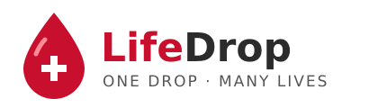
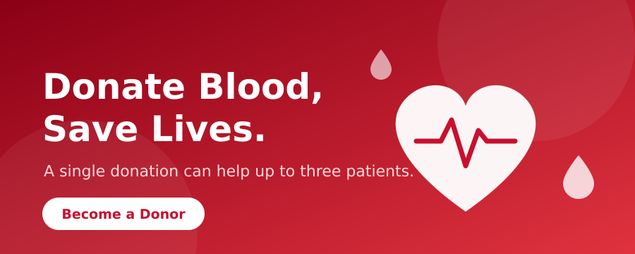
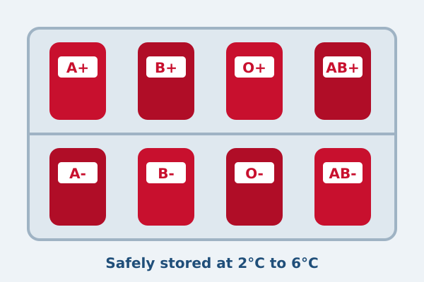
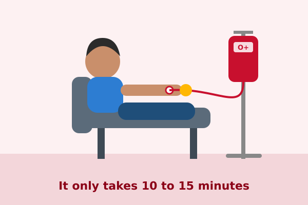
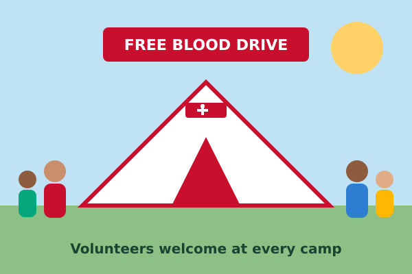

"One Drop, Many Lives" — A voluntary blood donation network connecting donors with patients across Pakistan.
Menu: Home | About Us | Why Donate | Who Can Donate | Donation Process | Our Services | Upcoming Camps | Register as Donor | Contact Us

Every two seconds, someone somewhere needs blood. It may be a mother during childbirth, a child with thalassemia, an accident victim, or a patient undergoing surgery. Blood cannot be made in a factory — it can only come from generous people like you.
LifeDrop Pakistan makes donating blood simple, safe and quick. Register once, and we will
contact you whenever a patient near you needs your blood group.
Your 15 minutes can give someone a lifetime.
LifeDrop Pakistan was started in 2020 by a group of university students in Lahore who saw families struggling to find blood donors in emergencies. What began as a small WhatsApp group has now grown into a network of more than 12,000 registered donors in Lahore, Karachi, Islamabad, Faisalabad and Multan.
To make sure that no patient in Pakistan loses their life because blood was not available in time.
A Pakistan where voluntary blood donation is a regular habit, just like any other good deed.

One standard donation is about 450 ml of blood, which can be separated into red cells, plasma and platelets. That means one donation can help up to three patients. Donating is also good for you:
Most healthy adults can donate blood. Please check the basic requirements below before visiting a camp.
You should be in good general health and feeling well on the day of donation.
Donors must be between 18 and 60 years of age and weigh at least 50 kg.
Your hemoglobin level should be at least 12.5 g/dL.
If this is your first donation, bring your CNIC, eat a proper meal and drink plenty of water before coming. Our staff will guide you through every step.
Please do not donate if you have a fever, cold or flu, have had a tattoo in the last 6 months, or have donated whole blood in the last 3 months.

Donating blood is simple and safe. A sterile, new needle is used for every donor. Here is what happens:
We offer the following services free of cost to donors, patients and institutions:

Visit any of our camps below. No appointment is needed, but registering online saves time.
| City | Venue | Schedule | Blood Groups Most Needed | |
|---|---|---|---|---|
| Date | Time | |||
| Lahore | University of Management and Technology (UMT) | 22 Nov 2026 | 9:00 AM – 3:00 PM | O-, B+ |
| Liberty Market Community Hall | 29 Nov 2026 | 10:00 AM – 5:00 PM | A-, AB- | |
| Karachi | Clifton Community Centre | 6 Dec 2026 | 9:00 AM – 4:00 PM | O+, O- |
| Islamabad | F-9 Park Main Gate | 13 Dec 2026 | 10:00 AM – 4:00 PM | B-, AB+ |
| Faisalabad | Clock Tower Chowk | 20 Dec 2026 | 9:00 AM – 2:00 PM | All groups |
| Multan | Nishtar Hospital Grounds | Date and time to be announced | A+, O+ | |
| Total camps this season | 6 camps in 5 cities | |||
Fill in the form below to join our donor network. Fields marked with * are required.
Need blood urgently or have a question? Our team is available 24 hours a day, 7 days a week.
Head Office: 12-B Johar Town, Lahore, Pakistan
Email: info@lifedrop.pk
Emergency Helpline: +92 42 3555 0123
Read trusted information from these organizations:
World Health Organization – Blood Safety and Availability
American Red Cross – Blood Donation Information
© 2026 LifeDrop Pakistan. All rights reserved.
Made with care to save lives.